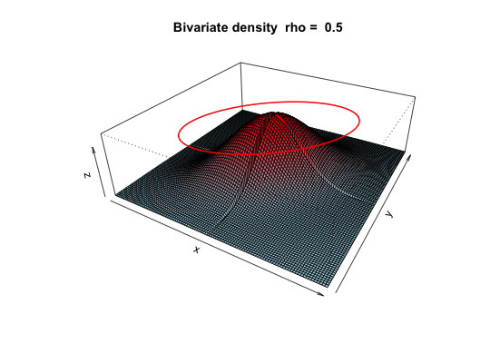
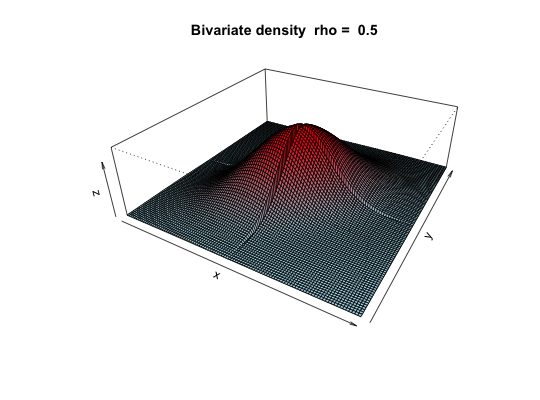

A graphic of a correlation ellipse divided into 4 regions based upon x and y cutpoints on two normal distributions. This is also an example of using the layout function. Draw a bivariate density plot to show how tetrachorics work.
draw.tetra(r, t1, t2,shade=TRUE) draw.cor(r=.5,expand=10,theta=30,phi=30,N=101,nbcol=30,box=TRUE, main="Bivariate density rho = ",cuts=NULL,all=TRUE,ellipses=TRUE,ze=.15)
| r | the underlying Pearson correlation defines the shape of the ellipse |
|---|---|
| t1 | X is cut at tau |
| t2 | Y is cut at Tau |
| shade | shade the diagram (default is TRUE) |
| expand | The relative height of the z axis |
| theta | The angle to rotate the x-y plane |
| phi | The angle above the plane to view the graph |
| N | The grid resolution |
| nbcol | The color resolution |
| box | Draw the axes |
| main | The main title |
| cuts | Should the graphic show cuts (e.g., cuts=c(0,0)) |
| all | Show all four parts of the tetrachoric |
| ellipses | Draw a correlation ellipse |
| ze | height of the ellipse if requested |
A graphic demonstration of the tetrachoric correlation. Used for teaching purposes. The default values are for a correlation of .5 with cuts at 1 and 1. Any other values are possible. The code is also a demonstration of how to use the layout function for complex graphics using base graphics.
tetrachoric to find tetrachoric correlations, irt.fa and fa.poly to use them in factor analyses, scatter.hist to show correlations and histograms.
#if(require(mvtnorm)) { #draw.tetra(.5,1,1) #draw.tetra(.8,2,1)} else {print("draw.tetra requires the mvtnorm package") #draw.cor(.5,cuts=c(0,0))} draw.tetra(.5,1,1)draw.tetra(.8,2,1)draw.cor(.5,cuts=c(0,0))